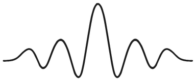
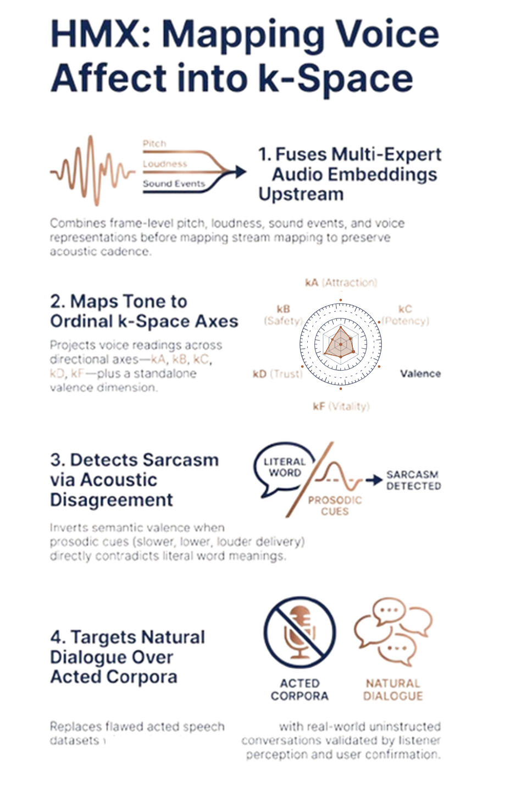

Listening, not simply Hearing
Hermeneutyx™ — UK trade mark application No. UK00004464138
Words tell us what a conversation is about. Nuances in voice and tone give us insights into how the speaker actually feels about the topic. Hermeneutyx (HMX) interprets sentiment, and maps it into the 6-dimensional Affect space of the Semantic Bathymetry™ datamodel.
